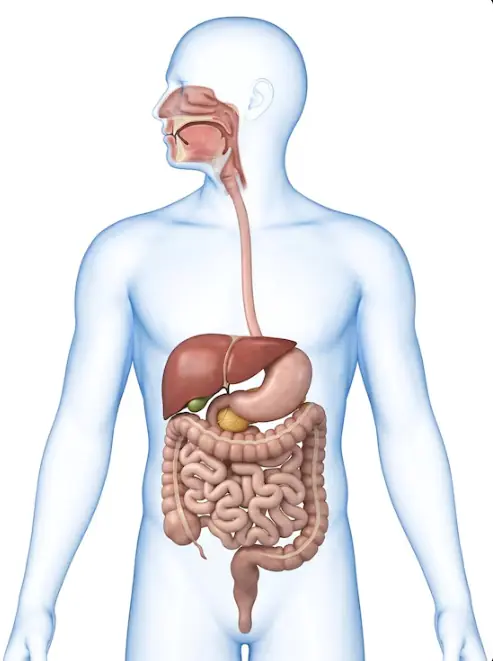

Ikuti perjalanan makanan dari mulut hingga dikeluarkan. Bangun model hubungan organ, proses, zat yang berperan, dan hasil pencernaan.
Mode penggunaan
Progres0 dari 7 tahap
Tahap 1
Orientasi
Tujuan • Prasyarat • Identitas
🎯 Tujuan pembelajaran
Mengidentifikasi urutan organ pencernaan dan menjelaskan fungsi utamanya.
Membedakan pencernaan mekanik dan kimiawi serta menghubungkan organ, zat yang berperan, dan hasil pencernaan.
Menganalisis gangguan pencernaan sederhana berdasarkan fungsi organ dan bukti pada kasus.
Menentukan cara menjaga kesehatan sistem pencernaan dengan alasan ilmiah.
Identitas sesi
Siapa yang belajar?
Prasyarat • Mini game
🍽️ Hubungkan makanan, nutrisi, dan fungsinya
Lengkapi setiap rantai: Makanan → Nutrisi → Fungsi.
Belum diperiksa
Petunjuk permainan dan informasi nutrisi
Desktop: seret kartu makanan dan fungsi ke baris nutrisi yang sesuai.
HP: sentuh kartu lalu kotak tujuan.
Setiap makanan bisa mengandung lebih dari satu zat gizi. Jeruk adalah contoh sumber vitamin C, susu sumber kalsium, dan serat mendukung kesehatan pencernaan.
1Kartu makanan
2Kartu fungsi
MakananNutrisiFungsi
Karbohidrat
Protein
Lemak
Vitamin
Mineral
Serat
Air
Lengkapi tujuh rantai makanan → nutrisi → fungsi, lalu periksa sekali untuk mengetahui pemahaman awalmu.
Hasil diagnostik awal: belum ada. Hasil pertama tidak akan berubah saat kamu berlatih.
Untuk dipikirkan: setelah makanan masuk ke tubuh, bagaimana zat gizinya dapat digunakan oleh sel-sel tubuh?
Tahap 2
Engage
Fenomena • Prediksi
🍚🥚🥬🥄
Fenomena
Perjalanan Makanan
Saat makan, kamu mengunyah nasi, telur, dan sayur hingga lebih halus, lalu menelannya. Makanan tersebut masuk ke dalam tubuh dan tidak lagi dapat kamu lihat secara langsung.
Prediksi dulu · Tidak dinilai benar atau salah sekarang
1. Setelah kita makan nasi, telur, dan sayur, apa yang menurutmu terjadi pada makanan tersebut di dalam tubuh?
2. Di organ manakah sebagian besar zat gizi diserap?
3. Jelaskan dugaan dan alasanmu. Tuliskan masing-masing secara singkat. Tidak harus benar pada tahap ini.
Pilih dua prediksi dan tuliskan alasan singkat. Jawaban akan diperiksa kembali setelah mempelajari proses pencernaan.
Pertanyaan untuk nanti: Apa yang mungkin terjadi jika salah satu organ pencernaan tidak bekerja dengan baik?
Diskusikan alasan awal siswa tanpa membuka jawaban final. Pertanyaan gangguan organ akan dikaji lebih lanjut pada Elaborate.
Tahap 3
Explore
Amati • Bandingkan • Simpulkan
Langkah belajar: Amati perjalanan makanan melalui delapan organ, bandingkan proses pada organ tertentu, kemudian tuliskan simpulan berdasarkan pengamatanmu.
Perjalanan makanan
Ikuti perjalanan makanan melalui saluran pencernaan
1 / 8

● Bola makanan bergerak mengikuti organ yang dipilih.
Kalibrasi Explore: seret label organ 1–8 dan waypoint jalur. Titik oranye adalah anchor organ, titik kuning adalah waypoint perantara.
Tidak semua zat makanan harus dipecah. Air, vitamin, dan mineral umumnya dapat diserap tanpa dicerna oleh enzim. Serat tidak dicerna oleh enzim manusia seperti pati, tetapi membantu menjaga kesehatan pencernaan.
Periksa pemahamanmu
1. Apa perbedaan mengunyah makanan dan kerja enzim?
Pilih satu jawaban berdasarkan materi.
Menurut saya, ...
Tahap 5
Elaborate
Analisis • Transfer • Evaluasi Model
Analisis • Integrasi konsep
Satu menu, tiga jalur pencernaan
Rani makan nasi, telur, dan makanan berminyak. Pilih jalur yang paling tepat untuk setiap zat makanan.
🍚 Karbohidrat dari nasi
🥚 Protein dari telur
🥑 Lemak dari makanan berminyak
Belum dikunci • maksimal 2 percobaan
Pilih satu jalur pada setiap nutrisi, lalu kunci jawabanmu.
Transfer konsep: Jika permukaan penyerapan usus halus berkurang drastis, hasil pencernaan dari menu Rani yang paling mungkin terganggu penyerapannya adalah...
Menunggu analisis jalur selesai
Selesaikan analisis jalur terlebih dahulu.
Analisis kasus • Bukti → Mekanisme → Transfer
Lima kasus sistem pencernaan
Amati bukti, jelaskan prosesnya, lalu tentukan keputusan. Setiap langkah memiliki satu jawaban awal dan satu kesempatan memperbaiki.